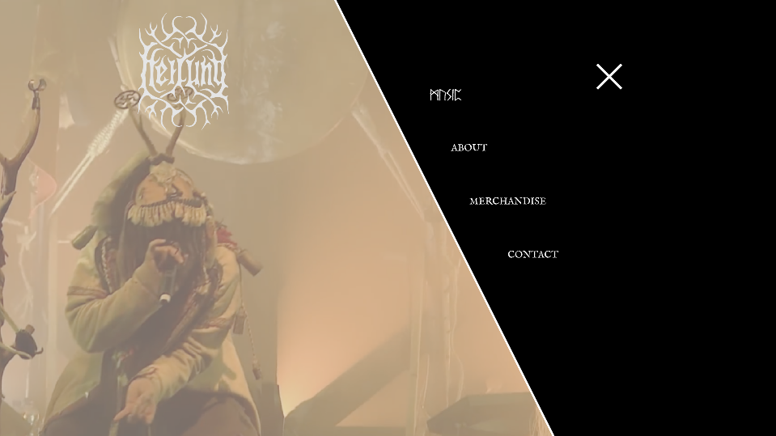

Heilung UX
Beginning Process
Before creating the website for the music group Heilung I started with a project brief that went over who the group is, who the audience is, what may be some assets needed on the site and more. I also created a Site Map A and Site Map B to plan the geography of the website.
Wireframing
When finished with the site maps I started on two lofi versions of the site in Adobe XD (lofi A and lofi B). I also created styletiles to figure out the aesthetic of Heilung.

Final
I found that Version B was far too awkward and the typography was not designed as well as Version A or C. I did not choose Version C because the website was far to clean and sterile for a band that has a viking aesthetic. I chose version A too work on and refine because the design was what worked best for the groups brand.
Go to Final Design